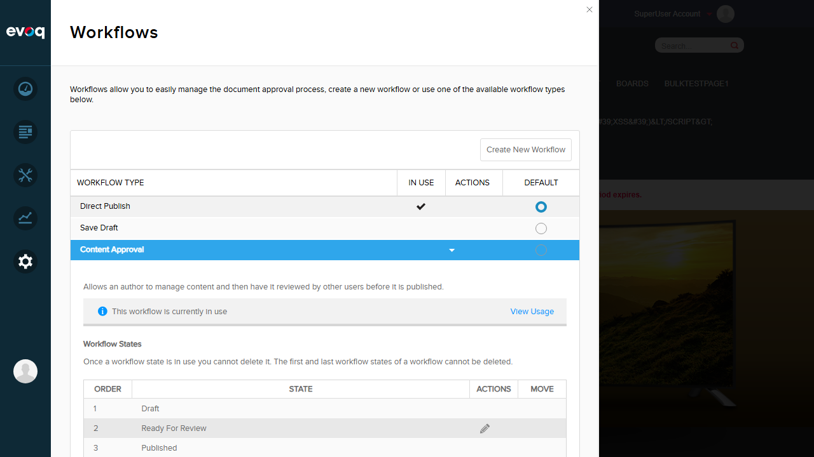
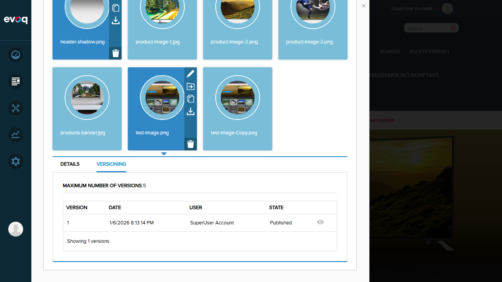
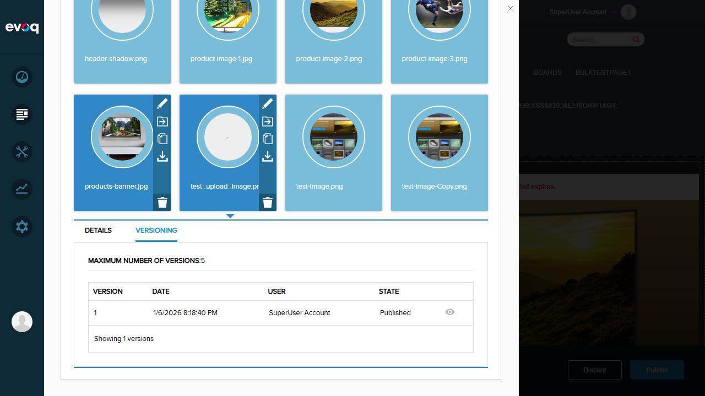
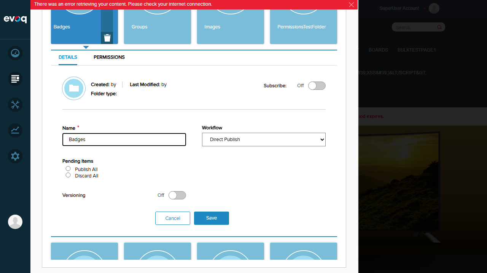
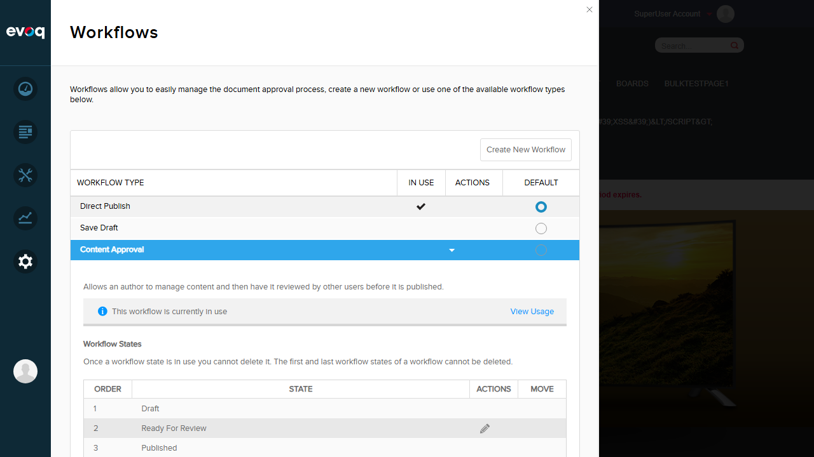
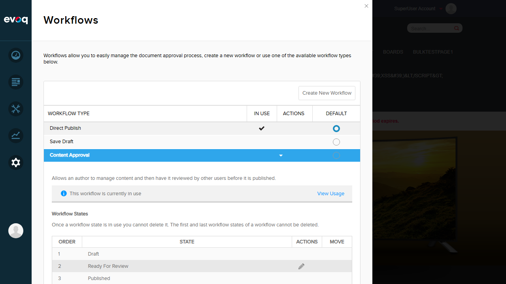
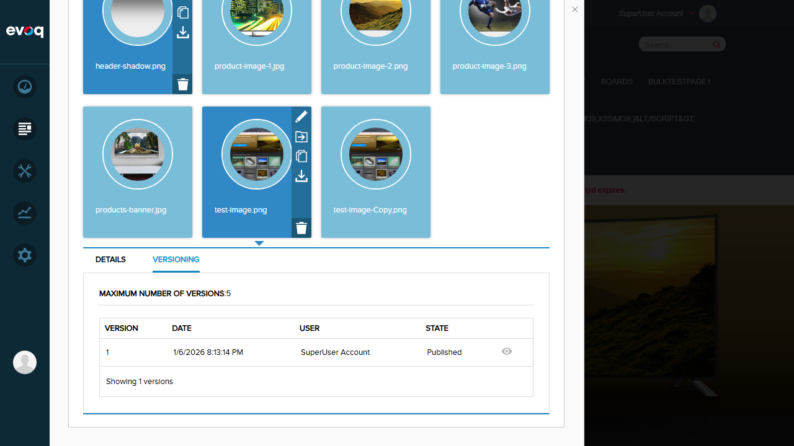
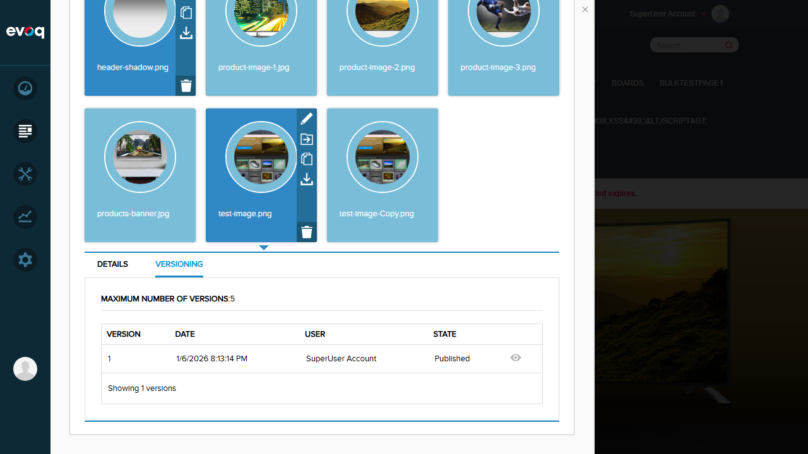
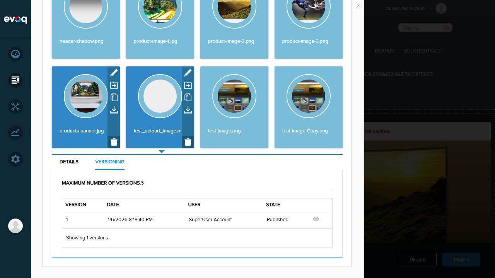
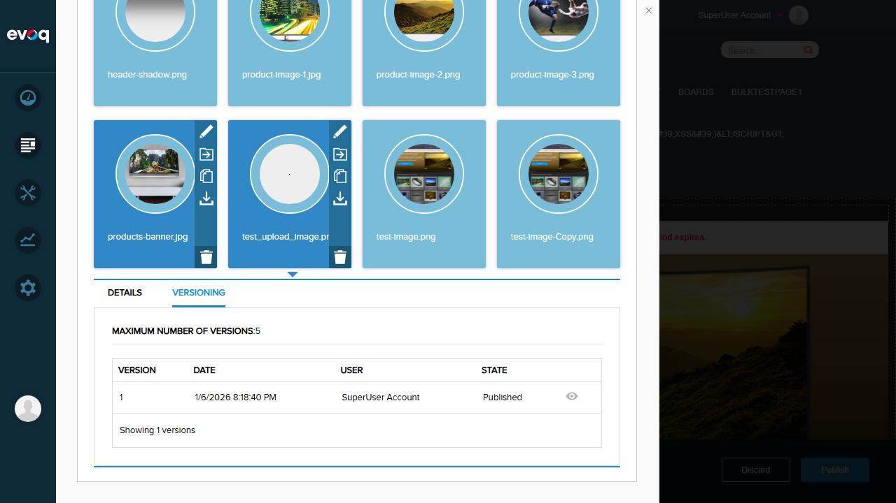

Test workflow state transitions (submit/approve/reject)
FAIL
Overall Result: 5 PASS / 2 FAIL
Test Cases
Test 1: View Workflow Configurations
Status:PASS
Steps:
Navigate to Settings > Workflow
View the list of available workflow types
Expand workflow to see states
Expected: Multiple workflow configurations should be visible with their states
Actual: Successfully viewed 5 workflow types:
Direct Publish - 1 state (Published) - Default workflow, currently in use
Save Draft - 2 states (Draft → Published)
Content Approval - 3 states (Draft → Ready For Review → Published)
Test Approval Workflow - 2 states (Draft → Published)
QA Test Workflow - 2 states (Draft → Published)

Test 2: View File Versioning with Workflow State
Status:PASS
Steps:
Navigate to Content > Assets > Images folder
Hover over a file to reveal action icons
Click the pencil/edit icon to open file details
Click on the Versioning tab
Expected: Version history should display with workflow states
Actual: Versioning tab correctly shows:
Maximum number of versions: 5
Version table with columns: Version, Date, User, State, Default
Published state displayed for existing files
Preview button for each version

Test 3: Upload File and Verify Workflow State
Status:PASS
Steps:
Navigate to Content > Assets > Images folder
Click "Add Asset" button
Upload a new file (test_upload_image.png)
Close upload dialog
Open the uploaded file's details
Check the Versioning tab for workflow state
Expected: Uploaded file should have a workflow state based on folder configuration
Actual: File was successfully uploaded and shows:
File: test_upload_image.png uploaded successfully
Version 1 created with State: "Published"
This confirms the folder uses Direct Publish workflow (immediate publish)

Test 4: View Page-Level Workflow Controls
Status:PASS
Steps:
Click on Edit button in PersonaBar to enter edit mode
Observe the workflow controls at the bottom of the page
Expected: Page should show Discard and Publish workflow buttons
Actual: Edit mode correctly displays:
"Discard" button - to discard pending changes
"Publish" button - to publish changes to the page
Module editing controls visible for each content module
Test 5: View Folder Workflow Options
Status:PASS
Steps:
Navigate to Content > Assets
Open folder details panel
View available workflow dropdown options
Expected: Folder should have workflow configuration dropdown
Actual: Workflow dropdown shows all available workflows:
Direct Publish
Save Draft
Content Approval
Test Approval Workflow
QA Test Workflow

Test 6: Configure Folder Workflow
Status:FAIL
Steps:
Navigate to Content > Assets
Open folder details panel
Change workflow dropdown to "Content Approval"
Click Save
Expected: Folder workflow should be updated successfully
Actual: JavaScript error occurred when attempting to save folder settings
Error: "Cannot read properties of undefined (reading 'getPermissions')"
Note: This appears to be a bug in the folder settings panel - the Permissions module may not be properly initialized when saving folder workflow changes.
Test 7: Test Workflow State Transitions (Submit/Approve/Reject)
Status:FAIL
Steps:
Configure a folder with Content Approval workflow
Upload a new file (should be in Draft state)
Submit file for review
Approve or reject the file
Verify state transitions
Expected: File should transition through workflow states: Draft → Ready For Review → Published
Without a folder configured for Content Approval workflow, files are immediately published
No existing folder with Content Approval workflow was found to test state transitions
Note: The workflow code files reviewed (AssetsWorkflowController.cs, WorkflowController.cs) show the state transition methods exist:
CompleteWorkflowState() - advances to next state
DiscardWorkflowState() - rejects/discards changes
DiscardDraftWorkflowState() - discards draft state
Observations
Workflow API: Code review confirms the workflow API endpoints exist in AssetsWorkflowController.cs with CompleteWorkflowState and DiscardWorkflowState methods
Workflow Actions: WorkflowStartFileAction.cs, WorkflowCompleteFileAction.cs, StateCompleteFileAction.cs, and StateDiscardFileAction.cs handle workflow state changes and notifications
Versioning Integration: File versioning is tightly integrated with workflow - each version tracks its workflow state
Default Workflow: The system default is "Direct Publish" which immediately publishes content without review steps
Folder Configuration Bug: Saving folder settings with workflow changes triggers a JavaScript error related to permissions - this may block users from configuring folder-level workflows through the UI
Page vs File Workflow: The system supports both page-level workflow (Discard/Publish buttons) and file-level workflow (versioning states)
Code Files Reviewed
Dnn.PersonaBar.Assets/Services/AssetsWorkflowController.cs - API endpoints for workflow actions
Dnn.PersonaBar.Assets/Components/WorkflowController.cs - Business logic for workflow operations
 

 


 
